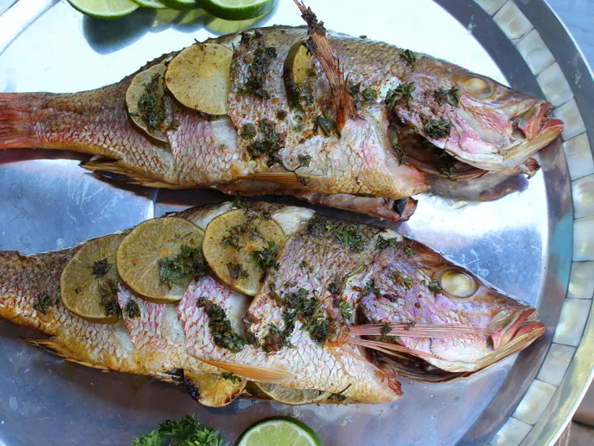

Smoked Whole Snapper

Description
Who isn’t impressed with a smoked whole fish? This snapper is easy, too. Pull together a few ingredients and let the smoker do the rest of the work. Garnish with lime wedges to serve.
Ingredients
- 2 (1 pound) whole snapper, cleaned and scaled
- 3 limes, sliced
- 1 tablespoon olive oil
- 2 teaspoons Cajun seasoning (such as TDon's Cajun Goods®)
- 2 cloves garlic, chopped
- 1/4 cup chopped fresh parsley
Steps
- Heat the smoker to 350 degrees F (175 degrees C).
- Pat fish dry; cut 3 small slits on each side of fish and stuff with lime slices. In a small bowl combine olive oil, Cajun seasoning, garlic, and parley. Coat fish with mixture.
- Smoke fish until it flakes easily with a fork, about 25 minutes. An instant read thermometer, inserted near the center should read 145 degrees F (63 degrees C). Garnish with lime wedges to serve.
Odin Recipes